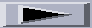
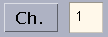
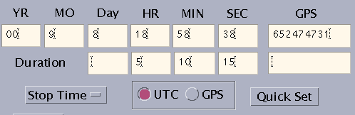
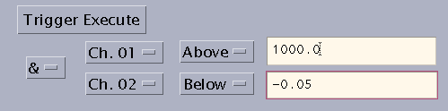
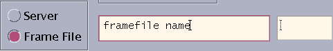
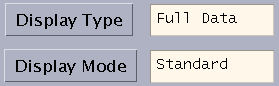
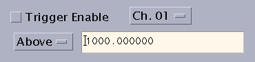

Before starting the DataViewer, $DVPATH has to be set to the path where the DataViewer is installed.
To start the DataViewer, type
e.g. $DVPATH/dataviewer -s 131.215.113.11
This will start the DataViewer Control:
Clicking  (Play) button at the upper left part of the control panel will start the Grace display window. By default, the first channel in the Server configuration will be displayed in realtime mode. Note: The graph may look blank if the data values of the signal fall outside the default Y-range. In this case the Y-Axis setting needs to be adjusted (see the topic Adjusting and Saving Settings below).
Other options: (type dataviewer -h to see all options)
DataViewer can also be started by
or
if frame files are going to be used as a data source instead of a server. See Frame File for the usage.
Selecting and Changing Signals
DataViewer can load up to 16 channels. When DataViewer is connected to a server, the first 16 signals from the Server configuration are automatically loaded into the 16 channels respectively. By default, only the first channel will be displayed. You may select the channels to be displayed from the channel select panel which is located at the right side of the control panel. Multiple selection is enabled since version 8.0.
{kind=link}
In order to change the signal for a particular channel, first open the
Signal Selection window by selecting
the pull-down menu Main->Signal Select (located on the
top panel). The left side shows the
current signal names in the (up to 16) channels.
Version G3.0 and above allow a signal name to be dragged (from
DataViewer or other applications) and dropped
in a particular channel. A signal could also be selected from the
Signal Selection Window as following:
The area under Group Names shows all of the current
available groups. Clicking on a group name, the area under
Signal Names will show the list of signal names inside the group.
When Fast (or Slow, DMT., OBSLT.)
is selected, only fast (or slow, DMT, Obsolete)
channels are shown. Select the desired signal. Then
select the channel number by entering the number at the New signal
selected for Ch. field or using the increasing/decreasing arrow buttons.
Click Select to make the change.
All channels can also be changed at once by using Main->Restore
if there is a pre-saved file.
{kind=link}
{kind=link}
Adjusting and Saving Settings
The middle portion of the control panel shows the settings of the highlighted channel. To change the highlighted channel, use the channel pull down menu as shown in the picture.
{kind=link}
To adjust X or Y Axis settings for a channel: first make this channel as the highlighted channel. Notes: (1) The highlighted channel will automatically become selected on the channel select panel. (2) It's not necessary to mark the Highlight checkbox, which gives an option to turn on/off the large graph at the upper left corner of the display (see Highlighted Signal On/Off).
X Axis: X-Axis is measured in seconds. The selection can be made from the pull-down menu X Axis. The maximum is 16 seconds and the default is set to 8. A Delay can be set in 1/16 second of increment.
Y Axis: To adjust Y scales, hand type the range in the Y-Min and Y-Max text fields. Different types of Y Scales are also available. See Y Scale Type for details.
Auto:By checking Auto checkbox, Grace will automatically set the proper display Y-range for the highlighted channel. However it is not recommended to use auto setting for the general display - especially not for displaying too many channels, since it may slow down the display. Auto is designed to be used for locating the curve and then the Y-Axis scale should be set manually.
Global Setting: If Global (located at the bottom of
the middle portion) is checked, any adjustment will
affect all channels rather than the highlighted channel only.
Once all settings are adjusted, you may save them to a file for later
recalls. To save, use Main->Save; to restore, use
Main->Restore from the top
panel.
Display Action
Stop: While in (Stop), the Grace display is in an interactive mode. You may use any Grace menu or buttons. For the usage of Grace, see Grace User's Guide.
Play: If (Play) is selected, data is displayed in a realtime mode, with possibly a 1-2 second delay from the time it is actually acquired. The display is in general updated once per second. For certain cases it could be updated up to 16 times per second (see later topic Refresh Rate for more details).
Pause:
The (Pause)
feature is designed for trend
data display only. Pressing this button will stop the display while
the realtime trend data being recorded. To resume, select Play
again. For non-trend display it works as same as Stop.
Playback
Along with realtime data display, data stored by the Data Server may also be recalled for presentation in Grace. Playback produces one or more new Grace window(s) and displays all information for the given display period at once. Note: It will not start the display until all of the data information has been read. Thus more data requested, longer loading time will be needed.
To use Playback, select the Playback from the Main menu. This will bring up the Playback control panel. Up to 16 channels can be chosen from the upper left corner of the Playback control.
{kind=link}
- Time Settings for Playback:
- reference time: the first line of the time seting is
the time for starting or ending the display, depending on the choice
of the toggled menu Stop Time/Start Time.
To set it, enter
the year, month, day, hour, minute, and second into the fields at the
first row of Time Setting. To quickly set all fields to the current
time, simply click Quick Set.
duration: the second line of the time setting is the length of time period for playback. Enter the days, hours, minutes, and seconds into the fields at the second row.
There is also a choice of using GPS time instead of UTC time for the setting.
- example:
- 
reference time: 00:09:08:18:58:38
- duration: 0:5:10:15
- in Start Time: The Grace will display data starting from the reference time. It will last for the length of the display period, with refreshing for each second increment. e.g. in the above setting, it will display from 18:58:38 until 00:08:52 the next day.
- in Stop Time: The Grace will display data of the display period and end by the reference time. Therefore in the above example, it will start from 13:48:23 and play until 18:58:37, refreshing for each second increment.
- example:
- reference time: the first line of the time seting is
the time for starting or ending the display, depending on the choice
of the toggled menu Stop Time/Start Time.
To set it, enter
the year, month, day, hour, minute, and second into the fields at the
first row of Time Setting. To quickly set all fields to the current
time, simply click Quick Set.
- Playback Options:
- Decimation: Data decimation can be chosen as full data, second trend, minute trend, 10-minute trend, or hour trend. The default is set as the following:
Decimation Display Period full data less than or equal to 10 seconds second trend between 10 seconds and 1 hour minute trend between 1 and 60 hours 10-minute trend 60 hours to 30 days hour trend more than 30 days
- X-Axis Format: There are two types of X-Axis format can be chosen for trend data display: The UTC Time choice shows X-Axis in the format of yy-mm-dd hh:mm:ss. The GPS Time shows the X-Axis in GPS seconds.
- Graph Mode: Standard displays selected channels in one Grace window, with each channel in a separated graph. Multiple display all selected channels in the same graph. Multiple Grace opens a new Grace window for each selected channel.
- More Options: You may choose to show the maximum, minimum, or/and mean values. It will display Mean if none of them is chosen or if more than one is chosen for the multiple case. You may choose to show or hide the X and Y Grid. You may also connect to a different server rather than the server which is used at the starting of the main control panel by typing the server IP and port number into the corresponding fields.
- Decimation: Data decimation can be chosen as full data, second trend, minute trend, 10-minute trend, or hour trend. The default is set as the following:
- Trigger:
Trigger for playback is a new feature added in version G2.0. Trigger conditions for playback can be selected at the bottom of the playback control panel:
- By hitting "Trigger Execute", only those data in the period when trigger condition(s) are satisfied will be displayed. In current version, up to two trigger conditions can be selected. If a condition is not needed, leave the text field for trigger value blank.
- Play Frame Files:

Playback can also display data from frame files. See Other Main Menu Items: Frame Files for how to open frame files. Quick Set button will set the maximum time range for the available data in the frame files.
Display Type
Two display types can be chosen from the pull-down menu Display Type. The selected display type is indicated on the display type field as shown in the figure below. Full Data: It displays full data in time domain.
The X-Axis shows time in seconds and Y-Axis is in ADC counts. Up to 16
seconds of data are plotted in each graph. The larger graph at the
left upper corner (which is optional. See Highlighted
Signal On/Off for details) will show the plots of highlighted channel.
Trend Data: Trend data (maximum, minimum,
and mean values) can be viewed in realtime.
- Settings: The X-Axis shows the length of the time period (in seconds) of trend being displayed. It resets itself to zero every 12 hours (43200 seconds). While resetting, all Grace sets will be saved automatically to a .save file with the time stamp as its name.
1. The realtime trend display can be paused by clicking Pause button. Use Play to resume. Some data may get lost if being paused for long time.
2. Off-line data playback should be viewed by Playback.

Display Mode
Standard displays up to
17 graphs. The larger graph at the upper left corner shows the plot
for the highlighted channel. Other graphs can show up to 16 channels,
with channel number 1 at the lower left and increasing to the upper right.
 Note: the larger graph at the upper left corner
can be turned on/off by checking/unchecking the Highlight box.
Note: the larger graph at the upper left corner
can be turned on/off by checking/unchecking the Highlight box.
{kind=link}
Multiple displays up to
16 channels in the same graph.
{kind=link}
Other Display Options
Resolution: The resolution of
full data display is adjustable.
Each channel will be displayed at the chosen resolution or the data sampling
rate of the signal, whatever is smaller. The default is 128 Hertz and the
maximum is 16384.
- Note: In order to keep up the display speed, an limit is set
for the number of points appeared in a graph. Thus choosing higher
resolution may result in
reducing the total display time (X-Axis range). Here is the chart:
Resolution Maximum Time 128 16 sec 256 8 sec 512 4 sec 1024 2 sec 2048 above 1 sec
Refresh Rate: In general, the refresh rate for graphing is once per second. It is adjustable up to 16 times per second by using the pull down menu Refresh Rate.
Filter: Moving Average Filter can be applied to the signals by selecting the Filter check box. Average is computed over 9 point intervals.
Y Scale Type: Four types of Y-Axis scale for each channel are available: Linear, Exp, Log, or Ln. The default is Linear. To change Y scale type for a particular channel, first highlight the channel, then use the pull down menu Scale to select the scale type.
 Highlighted Signal On/Off:
There is a check box next to Highlight (shown in the picture).
This gives an option to turn on/off the large graph at the upper left corner
of Grace which shows the highlighted channel in standard display.
Highlighted Signal On/Off:
There is a check box next to Highlight (shown in the picture).
This gives an option to turn on/off the large graph at the upper left corner
of Grace which shows the highlighted channel in standard display.
Color Selection: There are 14 choices
under the Color selection - 13 single colors and default.
Trigger
Trigger Control is located at the lower left corner
of the main control panel:

It is used for triggering (i.e., freezing the Grace ploting) when certain conditions are satisfied. To use the trigger, first choose the trigger signal by selecting the channel number. Then set the condition you want for the trigger. For example: Any value is above (or below) the Trigger Level 1000.0 (enter a number in the text field and type Enter) ADC Units. Check or uncheck the Trigger Enable box to enable or disable the trigger. To resume the graph ploting after it is triggered, simply click Play again.Other Main Menu Items
Frame File
One of the features added since Version 4 is to view data from Frame
files or Toc files. Under the menu Main->Frame Files there
are three options:
Make TOC File: Selecting this option will bring up
a file selection window. Select the Frame files from the
selection window then click Apply. The generated Toc file
will be placed in the same directory under the name "outtoc".
Note: Toc file could be generated without using
DataViewer. Run
Load TOC File: In the file selection window, select the Toc file which will be displayed, then click Apply.
Load Frame Files: In the file selection window, select the Frame files then click Apply.
After loading a Toc file or Frame files, use Playback to display the data.
Printing
Print to printer: You may use the Print feature from Grace.
First stop the display. Then click on File located at
upper left corner of the Grace window. Choose Print from the pull-down
menu and the picture will be sent to the default printer.
Print to ps file: Select Main->Print to File. The current display will be saved as a .ps file with the time stamp as the file name, i.e., 99-9-15-18-24-19.ps . Note that you do not have to stop the display to use this feature.
New Connection
This will set the existing (if any)
Grace window free from the DataViewer Control. The Grace may be closed
in the same manner of closing a X-term. The basic settings are
preserved and will be restored automatically and another new Grace window
will be opened.
New Configuration
This feature is used when there is any change in the
configuration file or when data server is re-started.
Exit
Choosing Main->Exit will exit the DataViewer program. If you
need to save the current settings, use Main->Save before
exiting.
Other Tips
Note: Make sure the Grace is in an interactive mode (Stopped) before applying any of the followings.
- view data set properties: Grace allows user to view data information for each graph. Click on the graph you want to look at. Then select Edit->Data set from the pull-down menu of the Grace window. A "Data set properties" window will pop up and for each graph set the information such as X and Y maximum/minimum can be displayed. This is a convenient way to find out the the proper display range. Then Y-axis range can be set accordingly.
- save Grace file: the current plots can be saved as a Grace file and reopened by Grace. Use the pull-down menu File->Save as and type in a file name. To reopen, use File->Open.
- adjust scales: X and Y scales are adjustable from Grace directly. Use Plot->Axis Properties.
Status Report/Debugging Information: Status report and debugging information are shown at the special status report window if using $DVPATH/dataviewer, or at the terminal window where the DataViewer Control is started if using $DVPATH/dataviewer0. It shows the general display information, user's selections, warnings and error messages. While data being displayed, it shows the time stamp of the displayed data and indicates any block drop as well. It is advised to check the message window whenever you experience something 'weird'.
Note: Always check the status messages first. It may help to target the problem(s) sooner.
- problem: can not start the DataViewer Control.
possible causes:
1. the variable $DVPATH is not set.
2. no data server is available.
suggestions:
1. set the variable $DVPATH to the directory where DataViewer is installed.
2. make sure the server IP address is typed correctly and the server is running.
- problem: DataViewer hangs.
possible cause: too many message queues are running on the current machine.
suggestion: check the list of message queue (ipcs -b) and kill the ones which are not in use (ipcrm -q < Queue ID >)
- problem: realtime Grace display doesn't keep up the speed.
suggestions:
1. set smaller X-Axis range.
2. do not use Auto setting for display.
3. display less channels, especially when higher refresh rate is used.
4. reduce the resolution.
5. reduce the refresh rate.
- problem: unexpected Grace display interuption.
possible causes:
1. the display is triggered.
2. data server interruption.
suggestions:
1. check if the Trigger Enable box is marked and check the status report.
2. re-connect to the server by using Main->New Connection.
- problem: no action being taken after a selection.
possible cause: the connection between control and display is not established; this could be caused by a network error.
suggestion: check the status messages on the message window. The linemessg received *************************
should appear after each selection. If not, select Main->New Connection to quit the current Grace display and start a new one.
- problem: graphs flash in Grace display.
possible cause: Auto settings are being used for two or more channels.
suggestion: uncheck Auto and manually set Y Axis ranges for all channels. see the Usage of Auto Setting under the topic Adjusting and Saving Settings.
- problem: Playback doesn't show all the data requested.
possible cause: there is no enough data stored by the Data Server.
Back to Main Page
DataViewer User Guide: http://www.ligo.caltech.edu/~hding/Dataviewer/index.html
Contact: Hongyu Jane Ding <hding@ligo.caltech.edu>
Last modified: Wed. Nov. 24, 2003